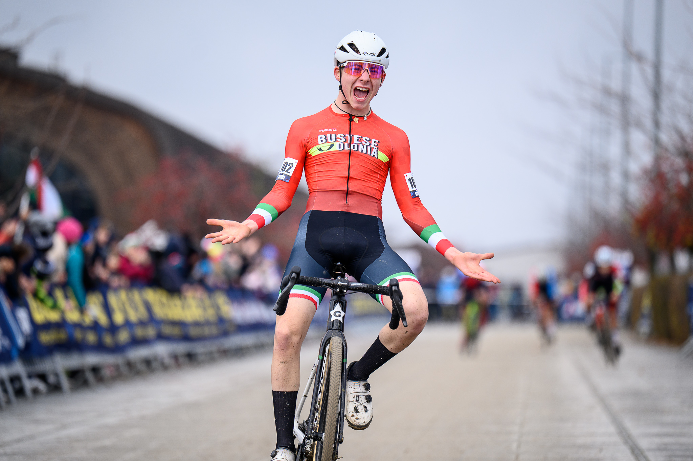
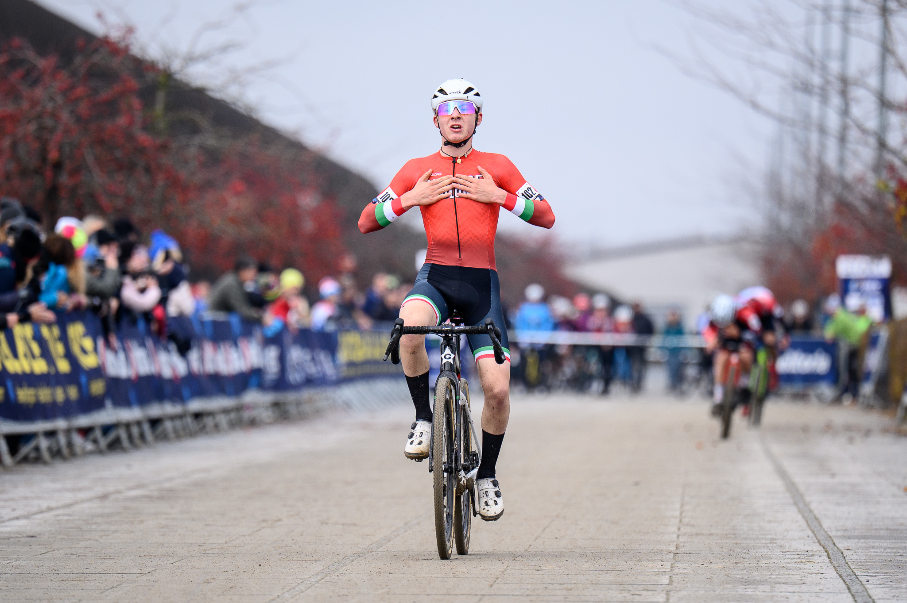
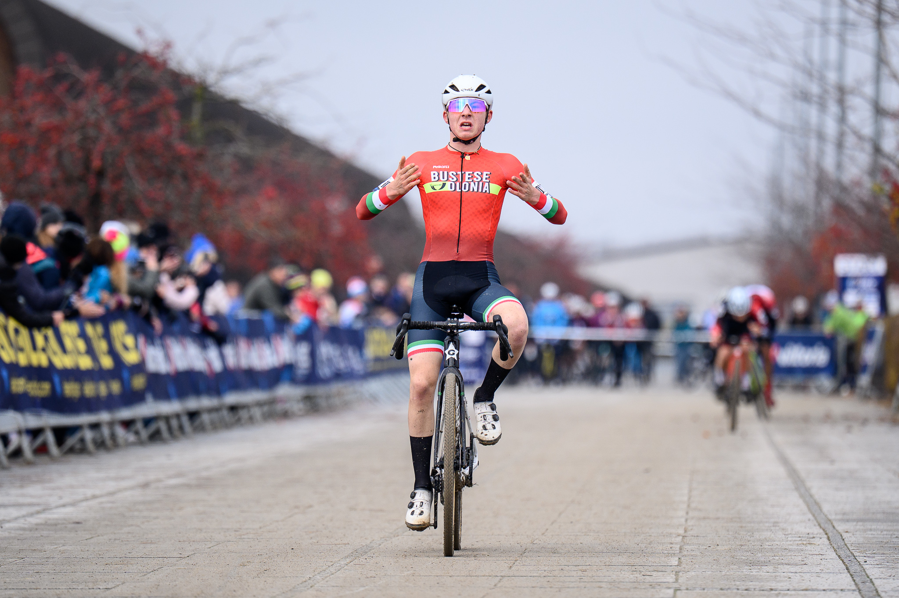
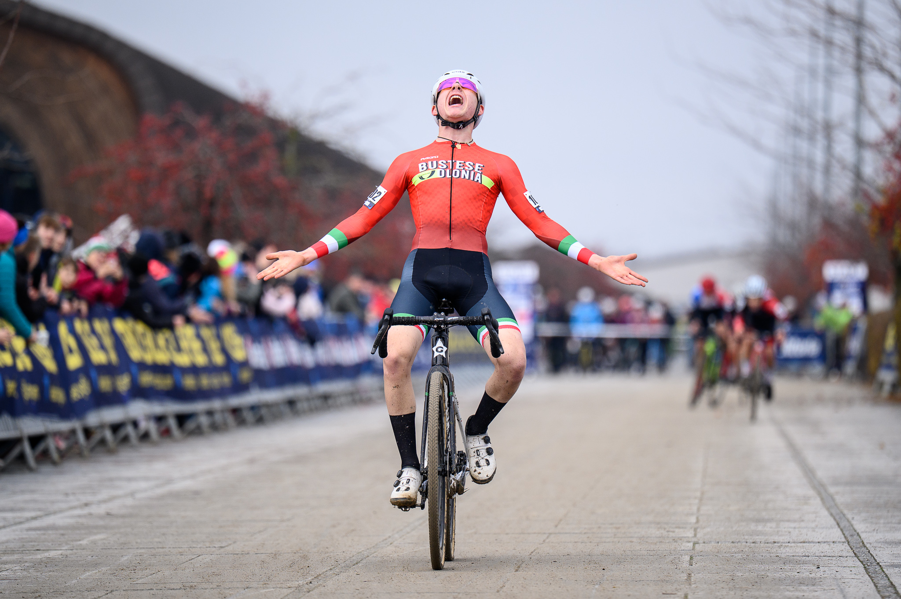
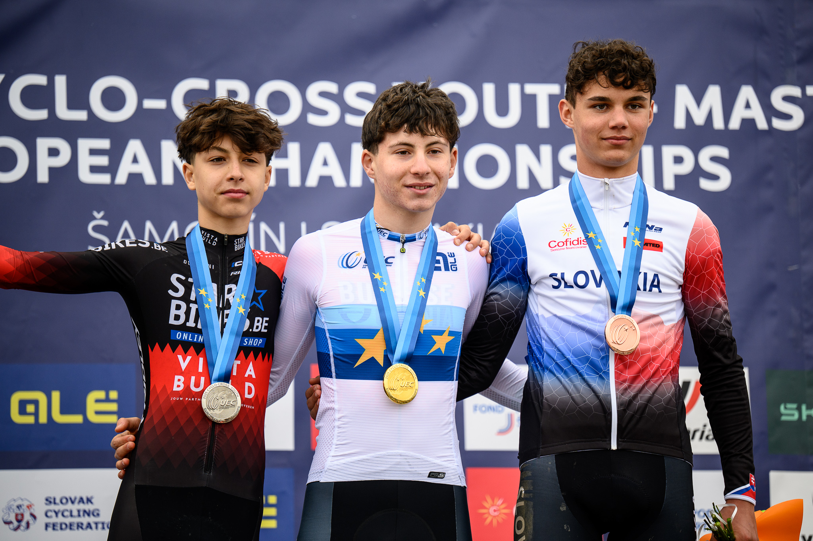
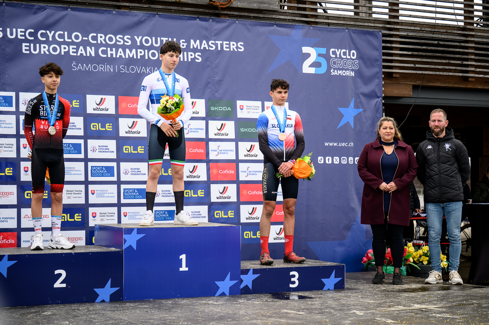
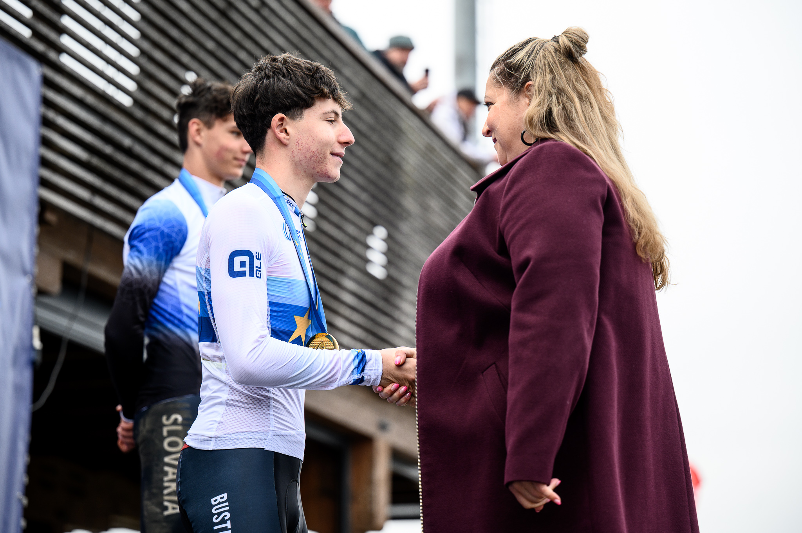
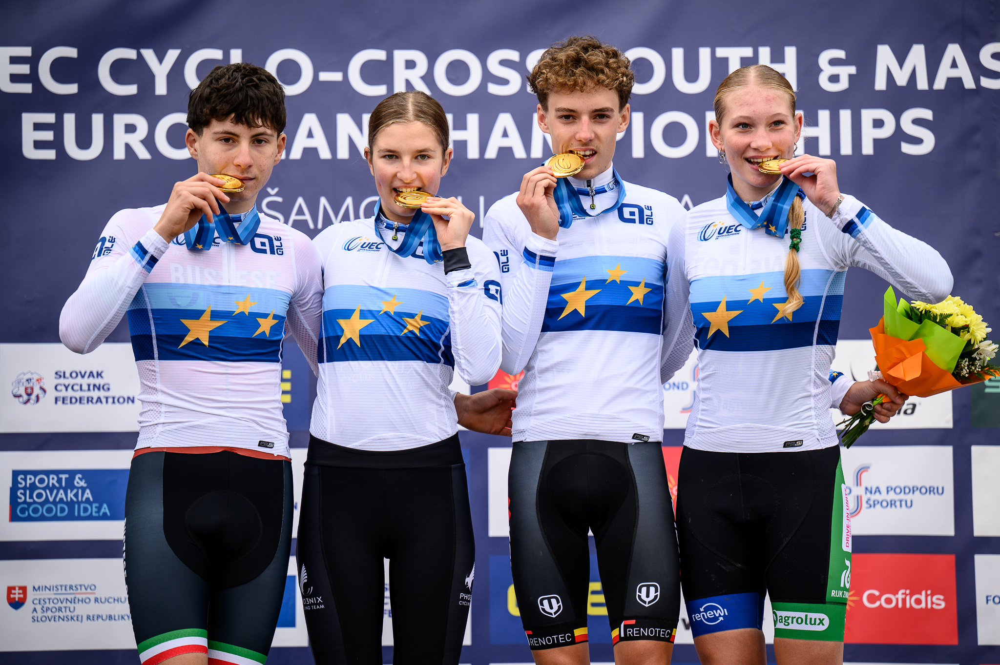
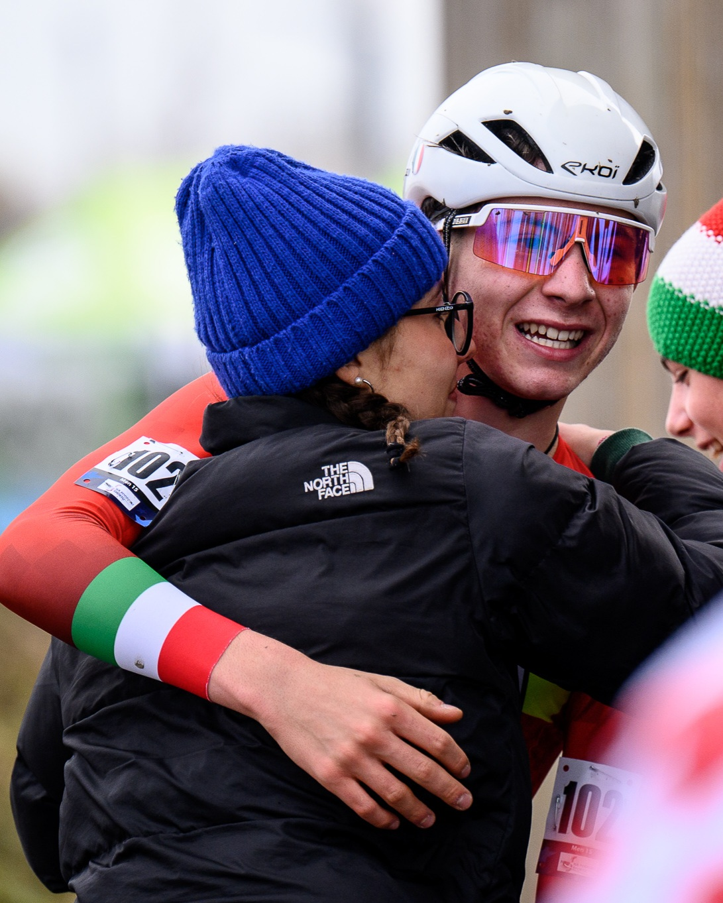

Sequenza della vittoria
Cinque fotogrammi consecutivi dell’arrivo, riprodotti in loop come un breve video.




Con immenso orgoglio annunciamo che uno studente del nostro istituto ha conquistato il Titolo Europeo. Un risultato straordinario che testimonia impegno, talento e passione. L’intera comunità scolastica si congratula per questo successo storico.
Dati ufficiali di gara
| Tempo finale | 33' 59" |
|---|---|
| Podio |
1. L. Ferro (ITA) 2. D. Szilasi (HUN) +3" 3. J. Pancik (SVK) +4" |
| Media oraria | 24.72 km/h |
| Location | X-Bionic Sphere, Samorin (SVK) |
Momenti di gloria





Dicono di lui
BiciTV.it
Luca Ferro (Bustese Olonia) è il nuovo campione europeo
La notizia ufficiale della vittoria e la cronaca della gara di Samorin.
Tuttobiciweb
Europei Young: Il trionfo del quattordicenne varesino
Approfondimento sulla prestazione straordinaria in Slovacchia.
L'Angolo del Pirata
Dominio azzurro: Ferro conquista l'oro europeo
Tutte le classifiche e i dettagli della giornata storica per il ciclocross giovanile.